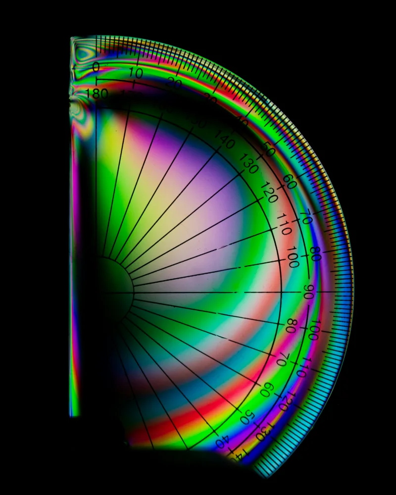

04Discipline
Mathematics
Find the pattern. Then prove it.
Mathematics at CATION is a way of seeing structure. Build fluency with number and algebra, think visually with geometry, model change with calculus, reason under uncertainty with statistics, and learn what turns an argument into a proof.
- Subjects
- 4
- Courses
- 3
- Labs in development
- 3

01
Subjects
Four ways into mathematics. Pick one to see its courses.
-
04.1
Number and Algebra
Patterns, equations and the language that mathematics is written in.
- Number systems
- Expressions and equations
- Functions
- Sequences
-
04.2
Geometry and Trigonometry
Shape, space and measurement, and the proofs behind them.
- Angles and proof
- Transformations
- Trigonometry
- Vectors
Courses planned
-
04.3
Calculus
The mathematics of change and of adding things up.
- Limits
- Derivatives
- Integrals
- Differential equations
-
04.4
Statistics and Probability
Reasoning clearly with data and uncertainty.
- Probability
- Distributions
- Inference
- Data analysis
Courses planned
02
Courses
Every outline is published. Lessons are being produced module by module, so none of these can be started yet.
- 01 Algebra from the Ground UpReal fluency with expressions, equations and graphs, and an understanding of why the rules work. Number and AlgebraFoundations8 weeks Lessons in development
- 02 Calculus: the Mathematics of ChangeLimits, derivatives and integrals, built up visually and put to work on motion, growth and optimisation. CalculusIntermediate10 weeks Lessons in development
- 03 Chaos and Dynamical SystemsHow simple rules produce unpredictable behaviour, from population models to strange attractors. CalculusAdvanced6 weeks Lessons in development
No mathematics courses at this level yet.
03
Labs
Hands-on simulations, being built now. None of them is playable yet; this is what each one will let you do.
-
In development
Attractor Explorer
Turn one parameter and watch a steady orbit give way to chaos.
-
In development
Function Grapher
Drag a curve and see its derivative redraw itself alongside.
-
In development
Probability Lab
Toss a thousand coins at once and watch the averages settle.
Questions worth asking
- 01Why can’t we forecast the weather a month ahead?
- 02How many shapes can tile a floor with no gaps?
- 03Is there a largest prime number?